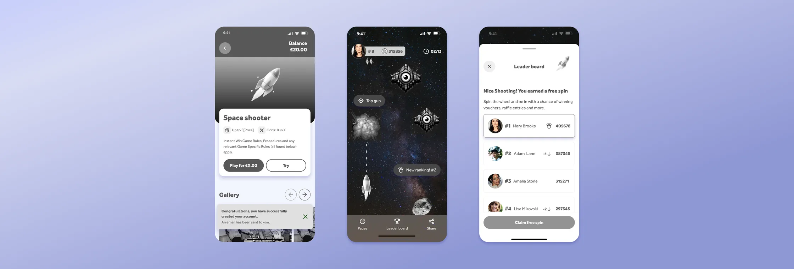
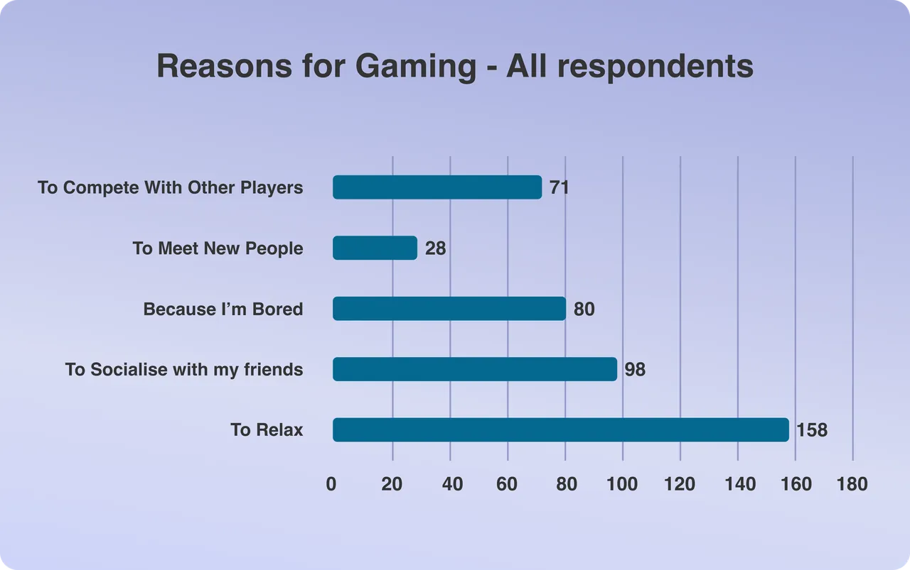
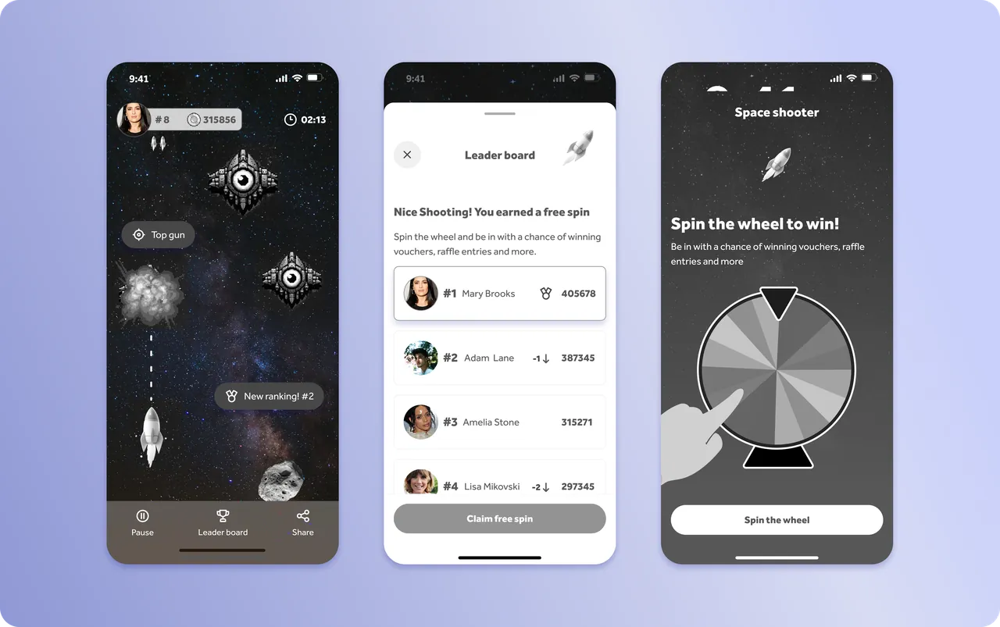

Retro Arcade IWG
Allwyn briefed a two-week sprint, Fast Followers, to explore how to engage 18–25 year olds with The National Lottery. As a team, we researched the audience together, then each took an idea forward individually. Retro Arcade IWG is my concept: an instant win game reframed as a space shooter.
My role: Research (as part of the team), concept design, prototyping


The Problem
The brief was clear: engage 18–25 year olds through the experience, not marketing to them. Desk research pointed to a few consistent findings: Gen Z have more games on their phone than any other age group, they play mostly to relax and spend time with friends, and community-driven, skill-based games were growing fastest. Existing instant win games didn't reflect any of that.
The Solution
Two findings shaped the concept: instant win games could feel more like genuine arcade games, and Gen Z's gaming is social. Retro Arcade IWG answers both, the instant win mechanic becomes a space shooter, and a leaderboard lets players compare scores with friends rather than playing alone.

Where it stands
The outcome of an instant win game is already decided the moment a player hits play, so the spin wheel gives that result a moment of reveal, arcade-style, rather than just displaying it flatly.
Get in Touch
Reach out by phone or email — I'd love to hear from you.
Say helloOr email huwmandesign@gmail.com